前言
年初做了一款Android TV 应用，用到了MQTT。主要实现的是类似一些景区利用大屏幕实时显示景点人数，超过人数就不允许进入。即利用闸机设备监控到进景区的游客，然后通过MQTT将消息发送给大屏幕，最后大屏幕实时显示景区人数，并响应一个消息通知闸机设备已经收到了它发过来的消息（确保消息到达）。这篇文章会模拟真实的使用流程进行讲解，即闸机发布消息——服务器（代理）收到消息转发给大屏幕——大屏幕收到消息后响应回去（发布消息）——服务器收到消息转发给闸机设备。
一、关于MQTT
1.1 简介
MQTT（Message Queuing Telemetry Transport，消息队列遥测传输）是IBM开发的一个即时通讯协议。它是一种发布/订阅，极其简单和轻量级的消息传递协议，专为受限设备和低带宽，高延迟或不可靠的网络而设计。它的设计思想是轻巧、开放、简单、规范，易于实现。这些特点使得它对很多场景来说都是很好的选择，特别是对于受限的环境如机器与机器的通信（M2M）以及物联网环境。相对于XMPP，MQTT更加轻量级，并且占用的宽带低。
1.2 特点
MQTT协议有以下特点：
- 使用发布/订阅消息模式，提供一对多的消息发布，解除应用程序耦合。
- 对负载内容屏蔽的消息传输。
- 使用 TCP/IP 提供网络连接。
- 有三种消息发布服务质量：
- qos为0：“至多一次”，消息发布完全依赖底层 TCP/IP 网络。会发生消息丢失或重复。这一级别可用于如下情况，环境传感器数据，丢失一次读记录无所谓，因为不久后还会有第二次发送。
- qos为1：“至少一次”，确保消息到达，但消息重复可能会发生。这一级别可用于如下情况，你需要获得每一条消息，并且消息重复发送对你的使用场景无影响。
- qos为2：“只有一次”，确保消息到达一次。这一级别可用于如下情况，在计费系统中，消息重复或丢失会导致不正确的结果。
- 小型传输，开销很小（固定长度的头部是 2 字节），协议交换最小化，以降低网络流量。
使用 Last Will 和 Testament 特性通知有关各方客户端异常中断的机制。
1.3 MQTT体系结构
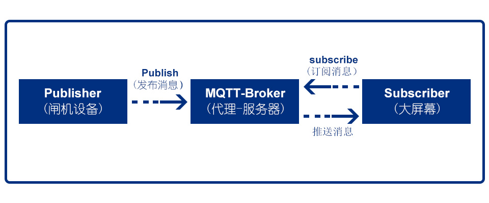
该体系结构图是结合文章开头说的例子画出来的，能很好的描述MQTT在实际运用中的三种身份。即进景区入口配置一台闸机设备作为发布者（Publisher），当闸机设备监控到有游客进入的时候会发布一个带主题（Topic）的消息（例如主题为“tourist_enter”）给服务器（MQTT-Broker），当服务器接收到发布过来的消息后，会进行基于主题的过滤，将消息转发给订阅了该主题的订阅者。 而景区大屏幕作为订阅者（Subscriber）,订阅的主题也是“tourist_enter”，这样就能接收到服务器转发过来的消息，收到消息后在大屏幕上实时显示当前景区人数即可。
该结构图中的闸机设备和大屏幕都是客户端，都可以进行发布和订阅。例如大屏幕收到消息后也可以发布一个消息通知闸机设备已经收到了它发过来的消息。
二、MQTT服务器搭建
想要使用MQTT，首先需要搭建一个MQTT的服务器（在公司一般是后台人员负责搭建）。一般前端人员为了方便测试都会先使用第三方提供的服务器，官方推荐了很多种服务器，我这里选用的是Apollo（属于Apache ActiveMQ）。
下载、解压
点击下载地址，选择最适合你的操作系统的版本进行下载，我这里用的是Windows，进行如下选择：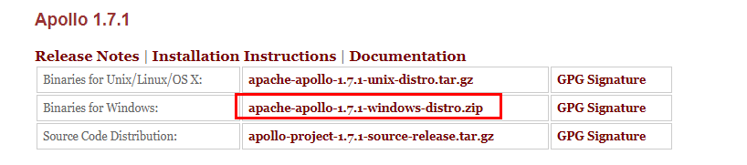 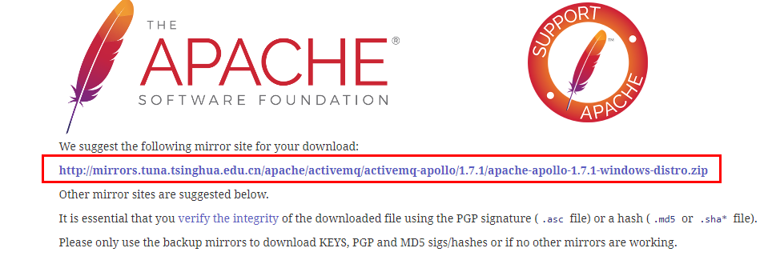下载后进行解压，我这里解压到D盘根目录下（D:\apache-apollo-1.7.1）。创建服务器实例
命令行进入解压文件的bin目录下（例如：cd D:\apache-apollo-1.7.1\bin），然后输入apollo create mybroker（其中mybroker为自定义的服务器名称）创建服务器实例。具体如下图：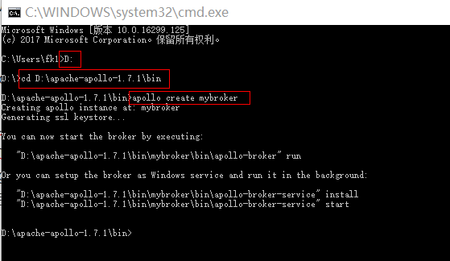
之后会在bin目录下生成mybroker文件夹，其中mybroker文件夹下的etc\apollo.xml文件下是配置服务器信息的文件，etc\users.properties文件包含连接MQTT服务器时用到的用户名和密码，注意这里只能修改密码（发现很多博客在没有验证的情况下就说用户名和密码都在这里修改），如果要修改用户名需要到etc\groups.properties文件下去修改。etc\groups.properties文件下的用户名与etc\users.properties文件下的密码是一一对应的，如下表示一个组中配置了两个用户分别是admin与wildma，然后这两个用户名对应的密码分别是password与123456
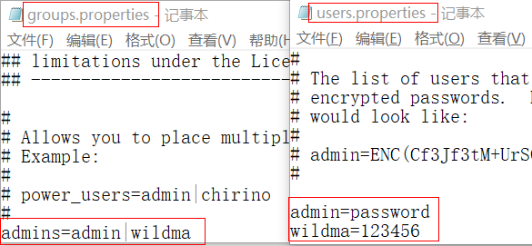
- 开启服务器
进入mybroker文件夹下的bin目录下，输入apollo-broker.cmd run开启服务器。看到如下界面表示开启成功。
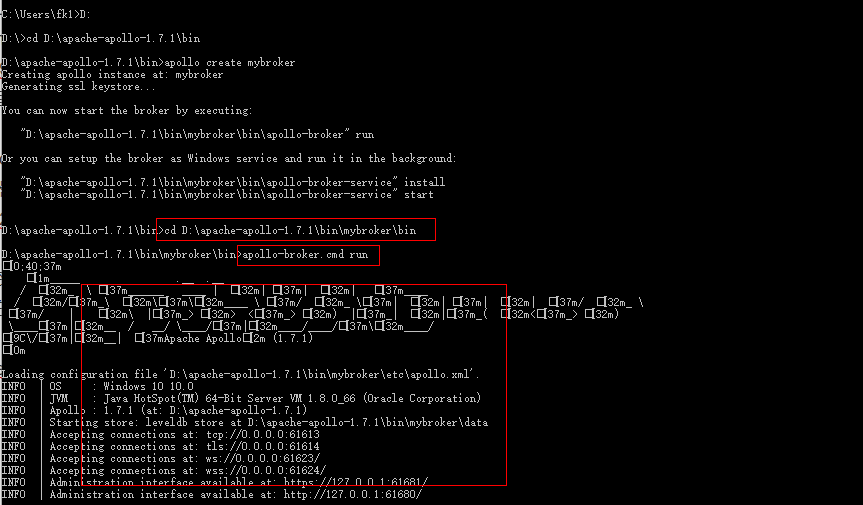
- 验证是否安装成功
最后在浏览器输入http://127.0.0.1:61680/，能成功打开界面就表示安装成功了。可以用上面配置的两个用户名进行登录。
三、调试MQTT的客户端——mqttfx 的使用
为了方便调试MQTT，我这里选用mqttfx作为闸机设备客户端。具体使用如下：
下载
点击下载地址，选择最适合你的操作系统的版本进行下载。如下图：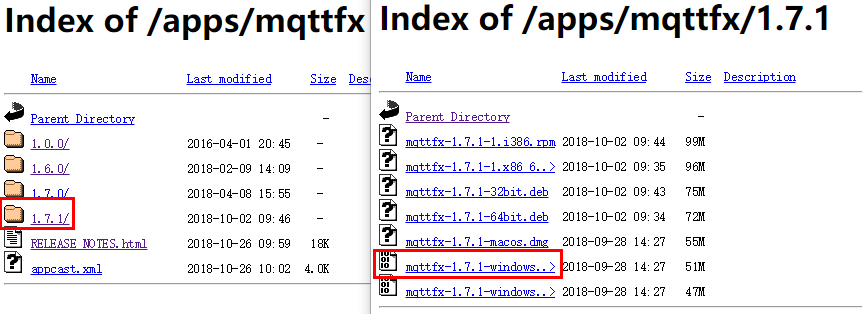安装
下载后一路点击下一步即可安装成功，安装成功后打开软件界面。如下图：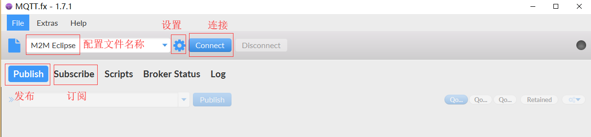配置
点击上图中的设置，添加一个新的配置文件。分别填写配置文件名称、服务器地址（由于服务器就是本机，所以这里用本机的IP地址即可，ipconfig/all可获取IP地址）、端口号（开启服务器后会显示接受连接的地址：Accepting connections at: tcp://0.0.0.0:61613，用这里的端口号61613即可，见上文中“开启服务器”后的图片）、用户名、密码，点击OK即可。如下图：
订阅消息
选择刚刚添加的配置文件“闸机设备”，点击”Connect”连接服务器。点击“Subscribe”，设置一个Topic（例如tourist_enter）,点击Topic右侧的“Subscribe”进行消息订阅。如下图：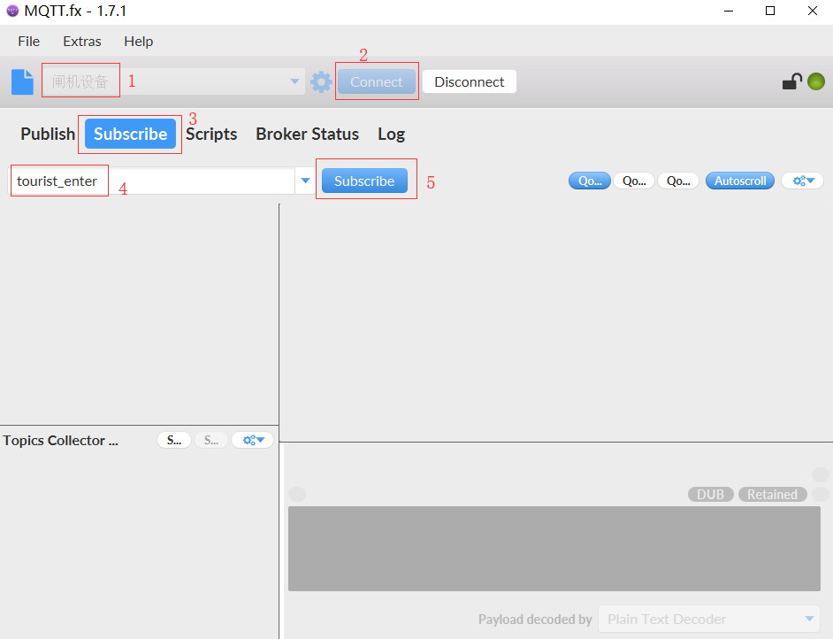发布消息
点击“Publish”，输入刚刚订阅的Topic (tourist_enter)，输入需要发布的消息内容（tourist enter）,点击Topic右侧的“Publish”进行消息发布。如下图：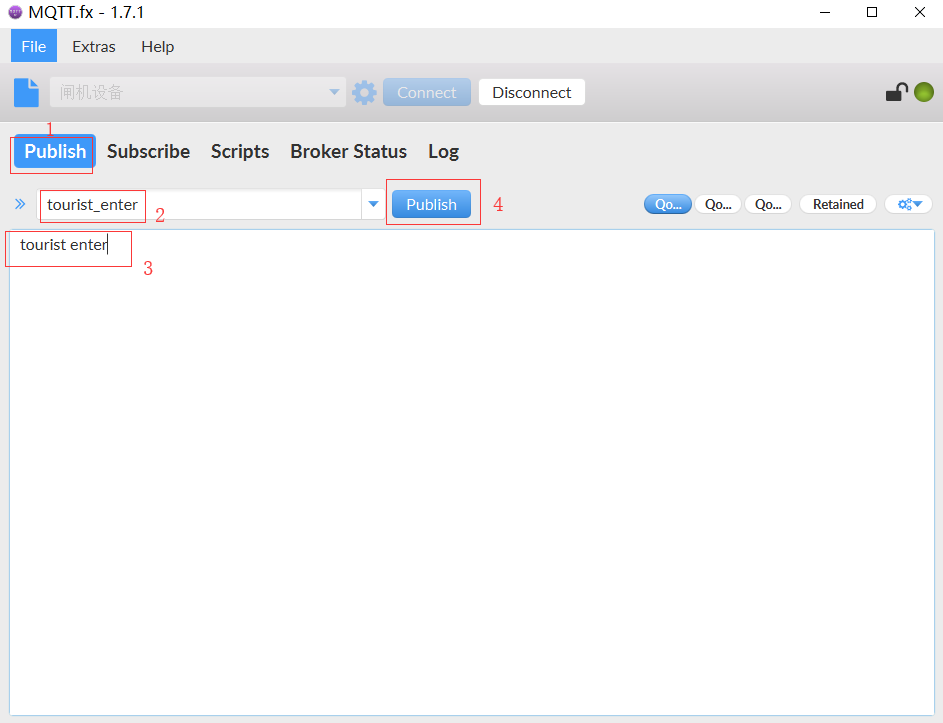
再返回订阅界面就能看到刚刚发布的消息，如下图：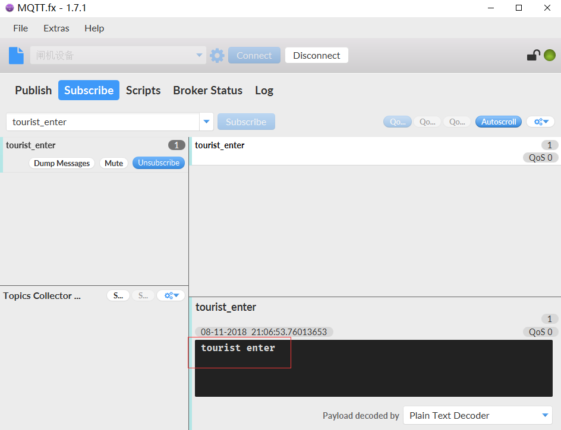
四、Android中MQTT的使用
Android中使用MQTT需要使用到Paho Android Service库，Paho Android Service是一个用Java编写的MQTT客户端库。
GitHub地址：https://github.com/eclipse/paho.mqtt.android
4.1 集成
- 在module的build.gradle文件中添加依赖
repositories { maven { url "https://repo.eclipse.org/content/repositories/paho-snapshots/" } } dependencies { compile 'org.eclipse.paho:org.eclipse.paho.client.mqttv3:1.1.0' compile 'org.eclipse.paho:org.eclipse.paho.android.service:1.1.1' } - 在 AndroidManifest.xml 添加限权
<uses-permission android:name="android.permission.INTERNET" /> <uses-permission android:name="android.permission.ACCESS_NETWORK_STATE" /> <uses-permission android:name="android.permission.WAKE_LOCK" /> - 在 AndroidManifest.xml 注册Service （MyMqttService为自己写的服务，下文会讲到）
<service android:name="org.eclipse.paho.android.service.MqttService" /> <!--MqttService--> <service android:name="com.dongyk.service.MyMqttService"/> <!--MyMqttService-->
4.2 具体代码
4.2.1 Android中使用MQTT最主要的就是以下几个方法：
- connect：连接MQTT服务器，这里主要讲3个参数的方法，如下：
参数options：用来携带连接服务器的一系列参数，例如用户名、密码等。@Override public IMqttToken connect(MqttConnectOptions options, Object userContext, IMqttActionListener callback) throws MqttException { //... }
参数userContext：可选对象，用于向回调传递上下文。一般传null即可。
参数callback：用来监听MQTT是否连接成功的回调 - publish：发布消息，这里使用四个参数的方法，如下：
参数topic：发布消息的主题@Override public IMqttDeliveryToken publish(String topic, byte[] payload, int qos, boolean retained) throws MqttException, MqttPersistenceException { //... }
参数payload：消息的字节数组
参数qos：提供消息的服务质量，可传0、1或2
参数retained：是否在服务器保留断开连接后的最后一条消息 - subscribe：订阅消息，这里主要讲2个参数的方法，如下：
参数topic：订阅消息的主题@Override public IMqttToken subscribe(String topic, int qos) throws MqttException, MqttSecurityException { //... }
参数qos：订阅消息的服务质量，可传0、1或2
4.2.2 MQTT服务——MyMqttService
下面写一个 Service 来实现MQTT在Android运用中的connect、publish、subscribe
package com.wildma.mqttandroidclient;
import android.app.Service;
import android.content.Context;
import android.content.Intent;
import android.net.ConnectivityManager;
import android.net.NetworkInfo;
import android.os.Build;
import android.os.Handler;
import android.os.IBinder;
import android.support.annotation.Nullable;
import android.support.annotation.RequiresApi;
import android.util.Log;
import android.widget.Toast;
import org.eclipse.paho.android.service.MqttAndroidClient;
import org.eclipse.paho.client.mqttv3.IMqttActionListener;
import org.eclipse.paho.client.mqttv3.IMqttDeliveryToken;
import org.eclipse.paho.client.mqttv3.IMqttToken;
import org.eclipse.paho.client.mqttv3.MqttCallback;
import org.eclipse.paho.client.mqttv3.MqttConnectOptions;
import org.eclipse.paho.client.mqttv3.MqttException;
import org.eclipse.paho.client.mqttv3.MqttMessage;
/**
* Author wildma
* Github https://github.com/wildma
* CreateDate 2018/11/08
* Desc ${MQTT服务}
*/
public class MyMqttService extends Service {
public final String TAG = MyMqttService.class.getSimpleName();
private static MqttAndroidClient mqttAndroidClient;
private MqttConnectOptions mMqttConnectOptions;
public String HOST = "tcp://192.168.0.102:61613";//服务器地址（协议+地址+端口号）
public String USERNAME = "admin";//用户名
public String PASSWORD = "password";//密码
public static String PUBLISH_TOPIC = "tourist_enter";//发布主题
public static String RESPONSE_TOPIC = "message_arrived";//响应主题
@RequiresApi(api = 26)
public String CLIENTID = Build.VERSION.SDK_INT >= Build.VERSION_CODES.O
? Build.getSerial() : Build.SERIAL;//客户端ID，一般以客户端唯一标识符表示，这里用设备序列号表示
@Override
public int onStartCommand(Intent intent, int flags, int startId) {
init();
return super.onStartCommand(intent, flags, startId);
}
@Nullable
@Override
public IBinder onBind(Intent intent) {
return null;
}
/**
* 开启服务
*/
public static void startService(Context mContext) {
mContext.startService(new Intent(mContext, MyMqttService.class));
}
/**
* 发布 （模拟其他客户端发布消息）
*
* @param message 消息
*/
public static void publish(String message) {
String topic = PUBLISH_TOPIC;
Integer qos = 2;
Boolean retained = false;
try {
//参数分别为：主题、消息的字节数组、服务质量、是否在服务器保留断开连接后的最后一条消息
mqttAndroidClient.publish(topic, message.getBytes(), qos.intValue(), retained.booleanValue());
} catch (MqttException e) {
e.printStackTrace();
}
}
/**
* 响应 （收到其他客户端的消息后，响应给对方告知消息已到达或者消息有问题等）
*
* @param message 消息
*/
public void response(String message) {
String topic = RESPONSE_TOPIC;
Integer qos = 2;
Boolean retained = false;
try {
//参数分别为：主题、消息的字节数组、服务质量、是否在服务器保留断开连接后的最后一条消息
mqttAndroidClient.publish(topic, message.getBytes(), qos.intValue(), retained.booleanValue());
} catch (MqttException e) {
e.printStackTrace();
}
}
/**
* 初始化
*/
private void init() {
String serverURI = HOST; //服务器地址（协议+地址+端口号）
mqttAndroidClient = new MqttAndroidClient(this, serverURI, CLIENTID);
mqttAndroidClient.setCallback(mqttCallback); //设置监听订阅消息的回调
mMqttConnectOptions = new MqttConnectOptions();
mMqttConnectOptions.setCleanSession(true); //设置是否清除缓存
mMqttConnectOptions.setConnectionTimeout(10); //设置超时时间，单位：秒
mMqttConnectOptions.setKeepAliveInterval(20); //设置心跳包发送间隔，单位：秒
mMqttConnectOptions.setUserName(USERNAME); //设置用户名
mMqttConnectOptions.setPassword(PASSWORD.toCharArray()); //设置密码
// last will message
boolean doConnect = true;
String message = "{\"terminal_uid\":\"" + CLIENTID + "\"}";
String topic = PUBLISH_TOPIC;
Integer qos = 2;
Boolean retained = false;
if ((!message.equals("")) || (!topic.equals(""))) {
// 最后的遗嘱
try {
mMqttConnectOptions.setWill(topic, message.getBytes(), qos.intValue(), retained.booleanValue());
} catch (Exception e) {
Log.i(TAG, "Exception Occured", e);
doConnect = false;
iMqttActionListener.onFailure(null, e);
}
}
if (doConnect) {
doClientConnection();
}
}
/**
* 连接MQTT服务器
*/
private void doClientConnection() {
if (!mqttAndroidClient.isConnected() && isConnectIsNomarl()) {
try {
mqttAndroidClient.connect(mMqttConnectOptions, null, iMqttActionListener);
} catch (MqttException e) {
e.printStackTrace();
}
}
}
/**
* 判断网络是否连接
*/
private boolean isConnectIsNomarl() {
ConnectivityManager connectivityManager = (ConnectivityManager) this.getApplicationContext().getSystemService(Context.CONNECTIVITY_SERVICE);
NetworkInfo info = connectivityManager.getActiveNetworkInfo();
if (info != null && info.isAvailable()) {
String name = info.getTypeName();
Log.i(TAG, "当前网络名称：" + name);
return true;
} else {
Log.i(TAG, "没有可用网络");
/*没有可用网络的时候，延迟3秒再尝试重连*/
new Handler().postDelayed(new Runnable() {
@Override
public void run() {
doClientConnection();
}
}, 3000);
return false;
}
}
//MQTT是否连接成功的监听
private IMqttActionListener iMqttActionListener = new IMqttActionListener() {
@Override
public void onSuccess(IMqttToken arg0) {
Log.i(TAG, "连接成功 ");
try {
mqttAndroidClient.subscribe(PUBLISH_TOPIC, 2);//订阅主题，参数：主题、服务质量
} catch (MqttException e) {
e.printStackTrace();
}
}
@Override
public void onFailure(IMqttToken arg0, Throwable arg1) {
arg1.printStackTrace();
Log.i(TAG, "连接失败 ");
doClientConnection();//连接失败，重连（可关闭服务器进行模拟）
}
};
//订阅主题的回调
private MqttCallback mqttCallback = new MqttCallback() {
@Override
public void messageArrived(String topic, MqttMessage message) throws Exception {
Log.i(TAG, "收到消息： " + new String(message.getPayload()));
//收到消息，这里弹出Toast表示。如果需要更新UI，可以使用广播或者EventBus进行发送
Toast.makeText(getApplicationContext(), "messageArrived: " + new String(message.getPayload()), Toast.LENGTH_LONG).show();
//收到其他客户端的消息后，响应给对方告知消息已到达或者消息有问题等
response("message arrived");
}
@Override
public void deliveryComplete(IMqttDeliveryToken arg0) {
}
@Override
public void connectionLost(Throwable arg0) {
Log.i(TAG, "连接断开 ");
doClientConnection();//连接断开，重连
}
};
@Override
public void onDestroy() {
try {
mqttAndroidClient.disconnect(); //断开连接
} catch (MqttException e) {
e.printStackTrace();
}
super.onDestroy();
}
}
该 MyMqttService 类的大概逻辑就是开启服务后，调用init()方法初始化各个参数，包括服务器地址、用户名、密码等等，然后调用doClientConnection()方法连接MQTT服务器，iMqttActionListener用来监听MQTT是否连接成功，连接成功则订阅主题。mqttCallback为订阅主题的回调，收到消息后会执行该回调中的messageArrived()方法，拿到消息后进行UI更新，并调用response()方法响应给对方告知消息已到达或者消息有问题等。
4.2.3 开启服务
在MainActivity中开启服务，这里为了方便不做UI更新，所以就一行开启服务的代码，如下：
import android.os.Bundle;
import android.support.v7.app.AppCompatActivity;
import android.view.View;
public class MainActivity extends AppCompatActivity {
@Override
protected void onCreate(Bundle savedInstanceState) {
super.onCreate(savedInstanceState);
setContentView(R.layout.activity_main);
MyMqttService.startService(this); //开启服务
}
}五、模拟真实场景
还是以文章开头说的例子来讲，现在拿mqttfx客户端作为闸机设备，上面的Android代码运行后作为大屏幕。
将大屏幕与服务器连接
即将大屏幕APK运行到Android TV上，没有TV可以用Android手机代替。记得代码中的发布主题设置为“tourist_enter”，响应主题设置为“message_arrived”。将闸机设备与服务器连接
选择闸机设备——点击连接——发布主题设置为“tourist_enter”，如下图：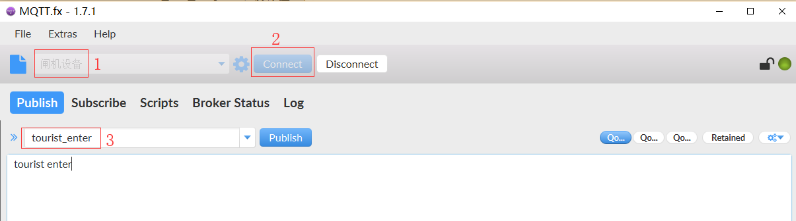
切换到Subscribe界面——响应主题设置为“message_arrived”——点击Subscribe按钮进行订阅，如下图：
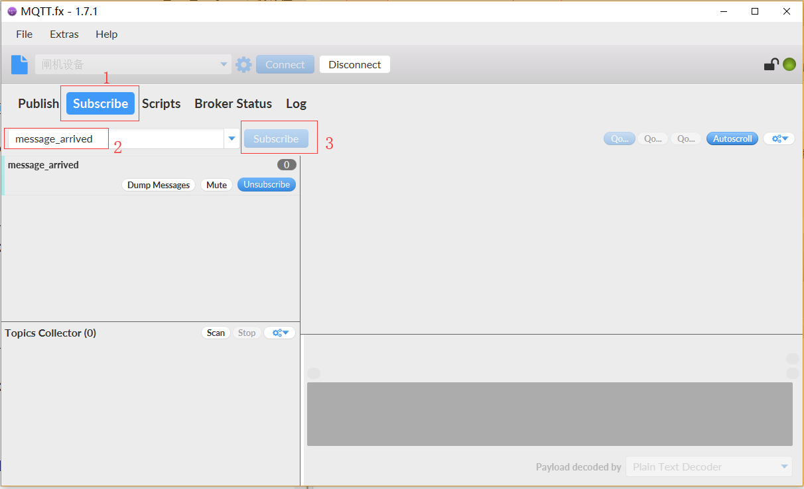发布
点击步骤2图中的Publish按钮进行发布大屏幕收到消息
这时候大屏幕收到服务器转发过来的消息，就会在大屏幕上显示进场人数，并响应给对方告知消息已到达。代码中为了简单就弹个Toast表示，具体显示就不贴图了。闸机设备收到消息
这时候mqttfx切换到Subscribe界面就可以看到大屏幕响应回来的消息，如下：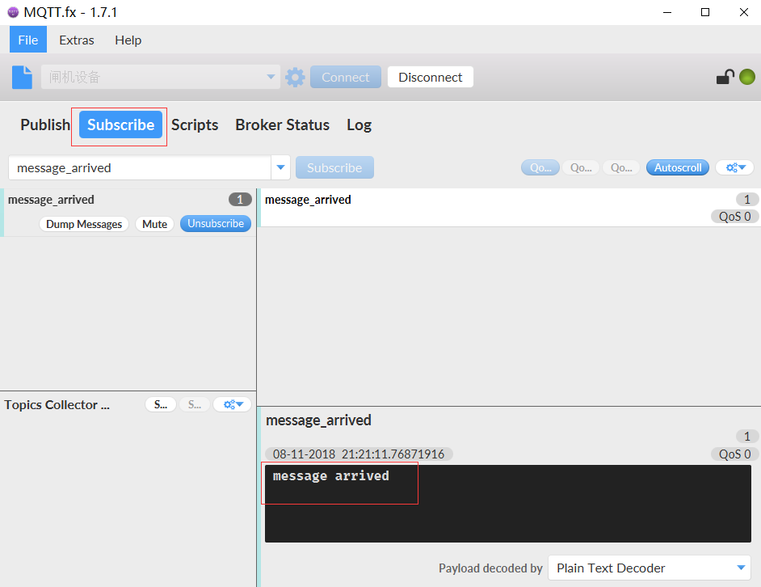
如上流程就是大概模拟我在开发中用到的MQTT使用流程，当然我的真实项目并没有那么简单，还包括各种数据和UI交互显示。希望模拟这种真实的使用流程进行讲解能让各位更好的理解MQTT的使用，有不足的请指出。
项目地址：MqttAndroidClient
参考资料：